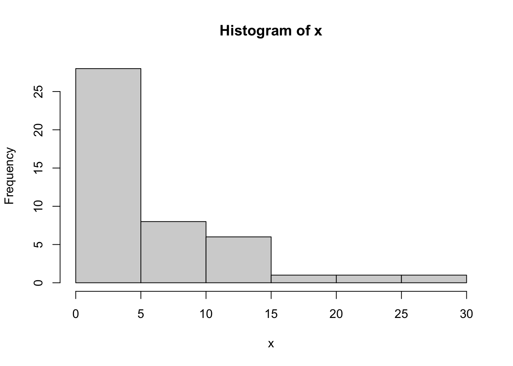
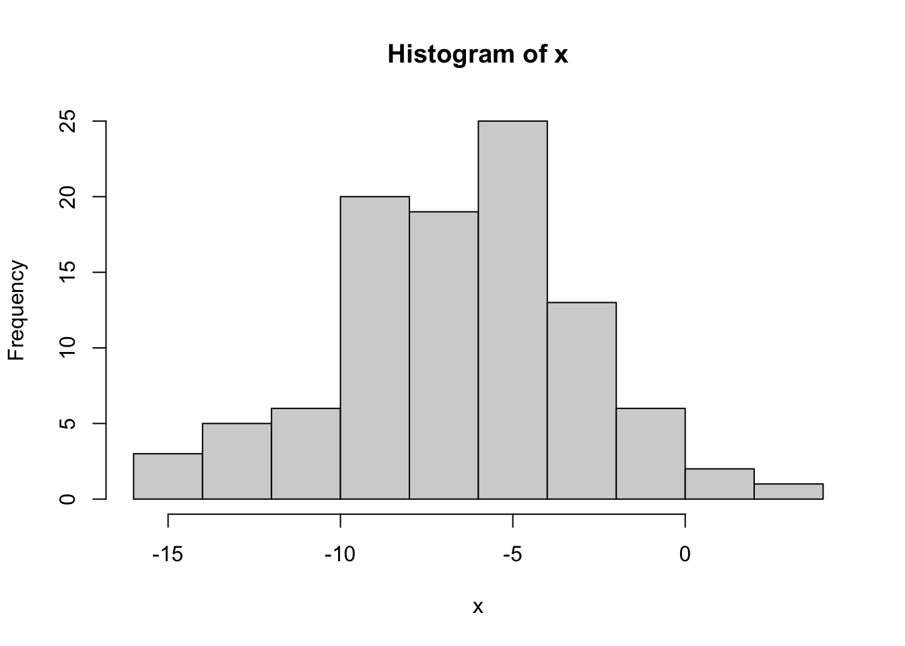

7 Distribusi Asimtotik MLE (Bagian I)
Gambaran Umum
Mari kita tinjau kembali penduga kemungkinan maksimum (MLE) untuk mempelajari sifat-sifat asimtotiknya dan penerapannya dalam membentuk selang kepercayaan. Pelajaran ini memperkenalkan dasar-dasar teoretis MLE, termasuk konsistensi, sifat ekuivarian, dan normalitas asimtotiknya di bawah syarat keteraturan. Anda akan mempelajari cara menurunkan informasi Fisher untuk model berparameter tunggal dan model multiparameter, lalu menggunakannya untuk membentuk selang kepercayaan asimtotik. Pelajaran ini juga membahas hampiran numerik untuk selang-selang tersebut dengan menggunakan fungsi dalam R, yaitu optim untuk optimisasi numerik. Pernyataan ikhtisar sumber tentang selang bootstrap parametrik dan nonparametrik, metode Delta, inferensi transformasi dengan bootstrap, serta contoh t dan Pareto bersifat antisipatif dan tidak didukung oleh isi Pelajaran 07 yang tersedia. Isi sebenarnya mencakup sifat MLE, selang Wald asimtotik skalar dan vektor, serta demonstrasi numerik Geometrik dan Normal. Mari kita mulai.
Tujuan
Setelah menyelesaikan pelajaran ini, Anda diharapkan mampu:
7.1 Sifat-Sifat MLE
Pendugaan kemungkinan maksimum populer karena terdapat sejumlah sifat yang dapat dibuktikan dan berlaku untuk SETIAP MLE!
Hasil berikut berlaku bagi setiap MLE, dengan beberapa “syarat keteraturan”. Syarat keteraturan tersebut mencakup
Fungsi peluang yang mendasarinya, \(f(x|\theta)\), bersifat “mulus”.
Parameter sebenarnya, \(\theta_0\), berada di bagian dalam ruang parameter, bukan pada batasnya. Syarat ini menyangkut ruang parameter dan tidak sama dengan himpunan dukungan data.
Kami tidak akan menyajikan daftar lengkap syarat maupun bukti bagi sifat-sifat berikut. Anda dapat menemukannya dalam buku teks Wasserman, Bab 9.13.
Contoh 7.1 Misalkan \(X_i\sim N(\mu, \sigma^2)\). Artinya, misalkan \(X_1, X_2, \ldots, X_n\) merupakan peubah acak Normal yang saling bebas dan berdistribusi identik (iid), dengan rataan \(\mu\) dan varians \(\sigma^2\). Kita mengetahui bahwa \(\hat{\mu}=\bar{x}\) dan \(\hat{\sigma}^2=\frac{1}{n}\sum_{i=1}^n(x_i-\bar{x})^2\) adalah MLE bagi \(\mu\) dan \(\sigma^2\), masing-masing. Berapakah MLE bagi simpangan baku, \(\sigma\)?
Penyelesaian
Kita mengetahui bahwa \(\sigma=g(\sigma^2)=\sqrt{\sigma^2}\). Oleh karena itu, berdasarkan sifat ekuivarian, MLE bagi \(\sigma\) adalah: \[\begin{align*} \hat{\sigma}_{mle}=\sqrt{\hat{\sigma}^2_{mle}}=\sqrt{\frac{1}{n}\sum_{i=1}^n (x_i-\bar{x})^2} \end{align*}\]
Contoh 7.2 Misalkan \(X_i\sim Bin(5, p)\), untuk \(i=1, \ldots, n\). Berapakah MLE bagi rasio odds, \(\text{OR}=\frac{p}{1-p}\)?
Penyelesaian
MLE bagi \(p\) adalah \(\hat{p}=\dfrac{\sum_{i=1}^n x_i}{5n}\). Oleh karena itu, MLE bagi \(\text{OR}\) adalah \[\begin{align*} \hat{\text{OR}}_{mle}=\dfrac{\hat{p}}{1-\hat{p}}=\dfrac{\dfrac{\sum_{i=1}^n x_i}{5n}}{1-\dfrac{\sum_{i=1}^n x_i}{5n}} \end{align*}\]
Contoh 7.3 Misalkan \(X_1, \ldots, X_n\) merupakan sampel iid dari distribusi Bernoulli dengan parameter \(p\). Tentukan MLE bagi \(p\) dan tentukan \(I(\hat{p})\). Kemudian, tentukan hampiran distribusi Normal bagi \(\hat{p}\).
Penyelesaian
Fungsi massa peluang (PMF)-nya adalah \(f(x|p)=p^x(1-p)^{1-x}\). Fungsi kemungkinannya adalah:
\[L(p)=\prod_{i=1}^n p^{x_i}(1-p)^{1-x_i}=p^{\sum x_i}(1-p)^{n-\sum x_i}\]
Fungsi log-kemungkinannya adalah: \[\ell(p)=\sum x_i \ln(p)+(n-\sum x_i)\ln (1-p)\]
Turunan fungsi log-kemungkinannya adalah: \[\frac{d}{dp}\ell(p)=\frac{\sum x_i}{p}-\frac{n-\sum x_i}{1-p}\]
Dengan menyamakan turunan tersebut dengan nol, kita memperoleh:
Oleh karena itu, MLE bagi \(p\) adalah \(\hat{p}=\dfrac{\sum x_i}{n}\). Selanjutnya, mari kita tentukan \(I(p)=-E\left(\frac{d^2}{dp^2}\ell(p)\right)\).
\[\frac{d^2}{dp^2}\ell(p) = -\frac{\sum x_i}{p^2}-\frac{n-\sum x_i}{(1-p)^2}\]
Selanjutnya, kita perlu menentukan negatif dari nilai harapan turunan kedua tersebut. \[\begin{align*} I(p)&=-E\left(\frac{d^2}{dp^2}\ell(p)\right)\\ &=-E\left(-\frac{\sum x_i}{p^2}-\frac{n-\sum x_i}{(1-p)^2}\right)\\ &=E\left(\frac{\sum x_i}{p^2}+\frac{n-\sum x_i}{(1-p)^2}\right)\\ &=\frac{\sum E(x_i)}{p^2}+\frac{n-\sum E(x_i)}{(1-p)^2} \end{align*}\]
Untuk peubah acak Bernoulli, \(E(X)=p\). Oleh karena itu, \[\begin{align*} I(p)&=\frac{\sum E(x_i)}{p^2}+\frac{n-\sum E(x_i)}{(1-p)^2}\\ &=\frac{np}{p^2}+\frac{n-np}{(1-p)^2}\\ &=\frac{np(1-p)^2+np^2-np^3}{p^2(1-p)^2}\\ & =\frac{np((1-p)^2+p(1-p))}{p^2(1-p)^2}\\ &=\frac{np(1-p)(1-p+p)}{p^2(1-p)^2}\\ &=\frac{n}{p(1-p)} \end{align*}\]
Jika \(I(p)=\frac{n}{p(1-p)}\), maka \(I(\hat{p})=\dfrac{n}{\hat{p}(1-\hat{p})}=\dfrac{n}{\dfrac{\sum x_i}{n}\left(1-\dfrac{\sum x_i}{n}\right)}=\dfrac{n}{\bar{x}(1-\bar{x})}\).
Dengan menggabungkan semua hasil ini, kita memperoleh \(\hat{p}\approx N\left(p_{true}, \dfrac{1}{I(\hat{p})}\right)\). Hal ini ekuivalen dengan \(\hat{p}\approx N\left(p_{true}, \dfrac{\bar{x}(1-\bar{x})}{n}\right)\).
Setelah menentukan distribusi asimtotik MLE (dengan syarat tertentu), kita dapat menggunakan informasi ini (dengan ukuran sampel besar) guna melakukan pendugaan selang bagi parameter yang tidak diketahui, \(\theta\).
7.2 Selang Kepercayaan Asimtotik
7.2.1 Kasus Satu Parameter
Pada bagian ini, kita menggabungkan sifat-sifat yang dibahas pada bagian sebelumnya untuk menyusun selang kepercayaan asimtotik bagi parameter yang tidak diketahui, \(\theta\), dengan menggunakan MLE.
Hampiran distribusi Normal bagi setiap MLE memberikan cara mudah untuk menentukan selang kepercayaan asimtotik bagi parameter yang tidak diketahui.
Contoh 7.4 Melanjutkan contoh sebelumnya, kita mengetahui \(\hat{p}=\bar{x}\), \(I(\hat{p})=\frac{n}{\bar{x}(1-\bar{x})}\), dan \(\hat{p}\approx N\left(p_{true}, \frac{\bar{x}(1-\bar{x})}{n}\right)\). Tentukan selang kepercayaan asimtotik 95% bagi \(p\).
Penyelesaian
Selang kepercayaan hampiran 95% bagi \(p\) adalah:
\[\begin{align*} \bar{x}\pm 1.96 \sqrt{\frac{\bar{x}(1-\bar{x})}{n}} \end{align*}\]Contoh 7.5 Misalkan kita memiliki 10 pengamatan berikut dari distribusi Bernoulli dengan parameter \(p\). Hitung selang kepercayaan asimtotik 95% bagi \(p\).
| 1 | 1 | 0 | 1 | 0 |
| 0 | 0 | 1 | 1 | 1 |
Penyelesaian
Melanjutkan contoh sebelumnya, kita mengetahui \(\hat{p}=\bar{x}\), \(I(\hat{p})=\dfrac{n}{\bar{x}(1-\bar{x})}\), dan \(\hat{p}\approx N\left(p_{true}, \dfrac{\bar{x}(1-\bar{x})}{n}\right)\).
Kita dapat menghitung \(\bar{x}=0.6\) dan mengetahui \(n=10\). Oleh karena itu,
Selang kepercayaan hampiran 95% bagi \(p\) adalah:
\[\begin{align*} \bar{x}\pm 1.96 \sqrt{\frac{\bar{x}(1-\bar{x})}{n}}=0.6\pm 1.96\sqrt{\frac{0.6(1-0.6)}{10}}=0.6\pm 0.3036=(0.2964, 0.9036) \end{align*}\]Contoh 7.6 Misalkan \(X_1, X_2, \ldots, X_n\) merupakan sampel acak dari \(\text{Exp}(\theta)\). Tentukan selang kepercayaan asimtotik 95% bagi \(\theta\), dengan menggunakan MLE bagi \(\theta\).
Penyelesaian
Untuk xᵢ ≥ 0 dan θ > 0, fungsi kepadatan peluang (PDF)-nya adalah \(f(x_i|\theta)=\frac{1}{\theta}e^{-\frac{x_i}{\theta}}\) dan \(E(X_i)=\theta\).
Langkah 1: Tentukan fungsi kemungkinan.
\[\begin{align*} L(\theta)=\prod_{i=1}^n \frac{1}{\theta}e^{-\frac{x_i}{\theta}}=\theta^{-n}e^{-\frac{\sum x_i}{\theta}} \end{align*}\]
Langkah 2: Tentukan fungsi log-kemungkinan.
\[\begin{align*} \ell(\theta)=-n\log \theta -\frac{\sum x_i}{\theta} \end{align*}\]
Langkah 3: Tentukan turunan fungsi log-kemungkinan terhadap \(\theta\).
\[\begin{align*} \frac{d}{d\theta}\ell(\theta)=-\frac{n}{\theta}+\frac{\sum x_i}{\theta^2} \end{align*}\]
Langkah 4: Samakan turunan tersebut dengan 0, lalu selesaikan persamaannya untuk memperoleh \(\theta\).
\[\begin{align*} & 0=\frac{-n\theta+\sum x_i}{\theta^2}, \qquad \Rightarrow 0=-n\theta+\sum x_i\\ & \Rightarrow \hat{\theta}=\frac{\sum x_i}{n} \end{align*}\]
Langkah 5: Tentukan \(I(\hat{\theta})=-E\left(\frac{d^2}{d\theta^2}\ell(\hat{\theta})\right)\).
\[\begin{align*} \frac{d^2}{d\theta^2}\ell_n(\theta)&=\frac{n}{\theta^2}-\frac{2\sum x_i}{\theta^3},\\ I_n(\theta)&=-E_{\theta}\left[\frac{d^2}{d\theta^2}\ell_n(\theta)\right]=\frac{n}{\theta^2},\\ I_n(\hat{\theta})&=\frac{n}{\hat{\theta}^2}=\frac{n}{\bar{x}^2}=\frac{n^3}{(\sum x_i)^2}. \end{align*}\]
Oleh karena itu, selang kepercayaan asimtotik 95% bagi \(\theta\) adalah: \[\hat{\theta}\pm 1.96\sqrt{\frac{1}{I_n(\hat{\theta})}}=\bar{x}\pm 1.96\sqrt{\frac{\bar{x}^2}{n}}=\bar{x}\pm 1.96\frac{\bar{x}}{\sqrt{n}}\]
7.2.2 Kasus Multiparameter
Dalam kasus multivariat, dengan dua atau lebih parameter yang akan diduga, \(\boldsymbol\theta=(\theta_1,\theta_2,\ldots,\theta_p)\) adalah vektor yang terdiri atas \(p\) parameter yang akan diduga, dan distribusi asimtotiknya adalah sebagai berikut. Saat \(n\rightarrow \infty\), \[ \hat{\boldsymbol\theta}_{ML}\sim N\left(\boldsymbol\theta_{\text{true}},\mathbf{I}^{-1}(\hat{\boldsymbol\theta}_{ML})\right)\] dengan \(\mathbf{I}(\boldsymbol\theta)\) adalah “matriks informasi Fisher”, yang didefinisikan sebagai \[\mathbf{I}(\boldsymbol\theta) = \left[\begin{array}{cccc} -E_x\left[\frac{\partial^2}{\partial \theta_1^2}\ell(\theta)\right] & -E_x\left[\frac{\partial^2}{\partial \theta_1\partial\theta_2}\ell(\theta)\right] & \cdots & -E_x\left[\frac{\partial^2}{\partial \theta_1\partial\theta_p}\ell(\theta)\right]\\ -E_x\left[\frac{\partial^2}{\partial \theta_2\partial\theta_1}\ell(\theta)\right] & -E_x\left[\frac{\partial^2}{\partial\theta_2^2}\ell(\theta)\right] & \cdots & -E_x\left[\frac{\partial^2}{\partial \theta_2\partial\theta_p}\ell(\theta)\right] \\ \vdots & \vdots & & \vdots \\ -E_x\left[\frac{\partial^2}{\partial \theta_p\partial\theta_1}\ell(\theta)\right] & -E_x\left[\frac{\partial^2}{\partial \theta_p\partial\theta_2}\ell(\theta)\right] & \cdots & -E_x\left[\frac{\partial^2}{\partial \theta_p^2}\ell(\theta)\right] \end{array}\right] \] dengan ketentuan, seperti sebelumnya, bahwa \(\ell(\theta)=log(L(\theta))\) dan nilai harapan dihitung terhadap semua \(x_1,x_2,\ldots,x_n\).
7.2.3 Ringkasan: Selang Kepercayaan Asimtotik 95%
Untuk setiap MLE, hampiran distribusi Gaussian asimtotik dapat digunakan untuk membentuk selang kepercayaan. Misalkan \(x_i\sim f_X(x|\theta)\), \(i=1,2,\ldots,n\) adalah \(n\) peubah acak yang saling bebas dan berdistribusi identik, yang berasal dari suatu distribusi dengan hanya satu parameter \(\theta\), dan misalkan \(\hat{\theta}=\text{argmax}(L(\theta))\) adalah MLE bagi parameter yang tidak diketahui \(\theta\). Selanjutnya, berdasarkan hampiran distribusi Gaussian asimtotik bagi setiap MLE, hampiran selang kepercayaan asimtotik 95% untuk \(\theta\) adalah \[\hat{\theta}\pm 1.96\sqrt{1/I(\hat{\theta}_{ML})}\]
Demikian pula, untuk model multiparameter, hampiran selang kepercayaan asimtotik 95% bagi parameter nomor \(k\), yaitu \(\theta_k\) adalah \[\hat{\theta_k}\pm 1.96\sqrt{\mathbf{I}^{-1}(\hat{\theta}_{ML})[k,k]}\] dengan \(\sqrt{\mathbf{I}^{-1}(\hat{\theta}_{ML})[k,k]}\) adalah akar kuadrat dari entri diagonal nomor \(k\); entri tersebut berasal dari \(\mathbf{I}^{-1}(\hat{\theta}_{ML})\) sedangkan \(\mathbf{I}^{-1}\) adalah matriks invers dari \(\mathbf{I}\).
7.3 Hampiran Numerik untuk Selang Kepercayaan
Dalam sejumlah kasus yang relatif sederhana, kita dapat membentuk selang kepercayaan 95% bagi parameter secara analitik dengan MLE sebagai pusatnya. Untuk itu, kita harus dapat mencari MLE secara analitik (dengan mengambil turunan pertama fungsi log-kemungkinan dan menyamakannya dengan nol), kemudian mencari informasi Fisher secara analitik pula (dengan mengambil turunan kedua fungsi log-kemungkinan, lalu menghitung nilai harapan terhadap \(x_1,x_2,\ldots,x_n\)). Seperti telah kita lihat, bahkan untuk distribusi statistik sederhana terdapat banyak kasus ketika MLE tidak mungkin dicari secara analitik. Dalam kasus-kasus ini, kita menghampiri MLE tersebut secara numerik dengan menggunakan optim dalam R. Sebagaimana kita dapat menghampiri MLE dengan menggunakan optim, kita juga dapat menghampiri informasi teramati (observed information) \(I(\hat{\theta})\) (untuk kasus berparameter tunggal) atau \(\mathbf{I}(\hat{\boldsymbol\theta})\) (untuk kasus multiparameter) dengan menggunakan optim. Hal ini kita lakukan dalam optim dengan menyertakan satu argumen tambahan ketika memanggil optim.
Catatan domain: kode demonstrasi di bawah dibekukan sesuai sumber, tetapi pemanggilan optim tidak memaksakan domain parameter. Model Geometrik mensyaratkan 0 < p ≤ 1 dan model Normal mensyaratkan σ² > 0; gunakan reparameterisasi yang sah, fungsi objektif berpelindung, atau optimisasi berbatas. Kode konvergensi 0 hanya menyatakan penghentian algoritme, bukan bukti optimum global atau keamanan domain.
7.3.1 Kasus Berparameter Tunggal
Kita akan menelusuri hampiran numerik melalui kasus ketika data berasal dari distribusi Geometrik berikut:
## assume that x~geom(p)
x=c(4,11,2,5,1,0,11,9,0,0,1,2,17,9,6,
0,0,12,3,1,3,0,0,1,27,0,2,0,24,9,
4,0,0,8,13,8,6,1,4,9,12,11,2,5,3)
x [1] 4 11 2 5 1 0 11 9 0 0 1 2 17 9 6 0 0 12 3 1 3 0 0 1 27
[26] 0 2 0 24 9 4 0 0 8 13 8 6 1 4 9 12 11 2 5 3hist(x)
Untuk mencari MLE secara numerik, pertama-tama kita menulis fungsi untuk mengevaluasi negatif fungsi log-kemungkinan, seperti yang telah dilakukan sebelumnya.
nll.geom=function(p,x){
-sum(log(dgeom(x,p)))
}Kemudian, gunakan optim untuk menghampiri MLE secara numerik:
out=optim(0.5,nll.geom,x=x)
out$par
[1] 0.1546875
$value
[1] 125.3257
$counts
function gradient
28 NA
$convergence
[1] 0
$message
NULLJika kita menjalankan optim yang sama, tetapi menyertakan opsi hessian=TRUE, maka optim akan menghampiri informasi teramati dan mengembalikannya dalam objek optim dengan nama hessian.
out=optim(0.5,nll.geom,x=x,hessian=TRUE)
out$par
[1] 0.1546875
$value
[1] 125.3257
$counts
function gradient
28 NA
$convergence
[1] 0
$message
NULL
$hessian
[,1]
[1,] 2225.054Objek hessian adalah hampiran informasi teramati pada titik optimum; dengan syarat keteraturan, besaran ini dapat dipakai sebagai hampiran plug-in untuk membentuk selang kepercayaan asimtotik 95% bagi parameter \(p\) dengan mengikuti rumus di atas:
## get the MLE
p.hat=out$par
p.hat[1] 0.1546875## get the Fisher Information
I=out$hessian
## get the 95% CI
p.hat-1.96*sqrt(1/I) [,1]
[1,] 0.1131361p.hat+1.96*sqrt(1/I) [,1]
[1,] 0.1962389Jadi, selang kepercayaan 95% berdasarkan MLE bagi parameter \(p\) adalah (0.113,0.196).
7.3.2 Kasus Multiparameter
Jika terdapat dua parameter atau lebih, optimisasi numerik dalam R serta hampiran numerik matriks informasi teramati \(\mathbf{I}(\hat{\boldsymbol\theta})\) juga dapat dilakukan dengan menggunakan optim. Untuk mengilustrasikannya, kita akan meninjau data yang dibangkitkan dari distribusi Normal. Kode berikut menyimulasikan data berdistribusi Normal dari suatu distribusi dengan rataan -7 dan varians 16:
set.seed(1)
x=rnorm(100,mean=-7,sd=sqrt(16))
x [1] -9.5058152 -6.2654267 -10.3425144 -0.6188768 -5.6819689 -10.2818735
[7] -5.0502838 -4.0467012 -4.6968746 -8.2215535 -0.9528753 -5.4406271
[13] -9.4849623 -15.8587995 -2.5002763 -7.1797344 -7.0647611 -3.2246552
[19] -3.7151152 -4.6243947 -3.3240905 -3.8714548 -6.7017401 -14.9574068
[25] -4.5206970 -7.2245150 -7.6231820 -12.8830095 -8.9126002 -5.3282338
[31] -1.5652818 -7.4111509 -5.4493136 -7.2152202 -12.5082382 -8.6599783
[37] -8.5771598 -7.2372536 -2.5998985 -3.9472970 -7.6580944 -8.0134467
[43] -4.2121465 -4.7733472 -9.7550228 -9.8299806 -5.5416722 -3.9258683
[49] -7.4493848 -3.4755691 -5.4075765 -9.4481056 -5.6355212 -11.5174524
[55] -1.2679052 0.9215996 -8.4688859 -11.1765385 -4.7211215 -7.5402184
[61] 2.6064710 -7.1569600 -4.2410426 -6.8879914 -9.9730928 -6.2448308
[67] -14.2198345 -1.1377806 -6.3869866 1.6904467 -5.0979619 -9.8397857
[73] -4.5570946 -10.7363905 -12.0145336 -5.8342151 -8.7731675 -6.9955786
[79] -6.7026347 -9.3580838 -9.2746749 -7.5407145 -2.2876520 -13.0942672
[85] -4.6242152 -5.6681985 -2.7476007 -8.2167357 -5.5199248 -5.9316048
[91] -9.1700801 -2.1685288 -2.3583895 -4.1991454 -0.6526662 -4.7660543
[97] -12.1063688 -9.2930617 -11.8984505 -8.8936025hist(x)
Untuk mencari MLE, pertama-tama kita menulis fungsi untuk mengevaluasi negatif fungsi log-kemungkinan:
nll.norm=function(theta,x){
mn=theta[1]
vr=theta[2]
-sum(log(dnorm(x,mean=mn,sd=sqrt(vr))))
}Kemudian, jalankan optim untuk mencari MLE. Kita menyertakan opsi hessian=TRUE untuk meminta optim menghampiri matriks informasi teramati pada titik optimum.
out=optim(c(-11,1),nll.norm,x=x,hessian=TRUE)
out$par
[1] -6.564774 12.773473
$value
[1] 269.2845
$counts
function gradient
61 NA
$convergence
[1] 0
$message
NULL
$hessian
[,1] [,2]
[1,] 7.8287246339 0.0001983622
[2,] 0.0001983622 0.3067152221Nilai-nilai dugaan MLE bagi \(\boldsymbol\theta=(\mu,\sigma^2)\) adalah:
theta.hat=out$par
theta.hat[1] -6.564774 12.773473jadi, nilai dugaan MLE bagi \(\mu\) adalah -6.564774 dan nilai dugaan MLE bagi \(\sigma^2\) adalah 12.773473.
Untuk mencari selang kepercayaan bagi setiap parameter tersebut, kita menggunakan invers matriks informasi teramati \(\mathbf{I}\), lalu mengambil akar kuadrat elemen-elemen diagonalnya. Karena nilai-nilai ini sering disebut “galat baku”, kita akan menuliskannya sebagai se dalam kode R:
## standard errors = sqrt(I.inv[p,p])
I=out$hessian
se=sqrt(diag(solve(I)))
se[1] 0.357400 1.805645Hasilnya adalah sebuah vektor. Untuk entri bernomor \(k\), nilainya adalah \(\sqrt{\mathbf{I}^{-1}(\hat{\theta}_{ML})[k,k]}\). Galat baku yang berkaitan dengan \(\mu\) adalah nilai pertama dalam vektor tersebut (\(se[1]\)) dan galat baku yang berkaitan dengan \(\sigma^2\) adalah nilai kedua. Urutannya sama dengan urutan nilai dugaan parameter dalam out\$par. Dengan demikian, kita dapat membentuk selang kepercayaan 95% bagi \(\mu\)
## CI for mu
c(theta.hat[1]-1.96*se[1] , theta.hat[1]+1.96*se[1])[1] -7.265278 -5.864270dan bagi \(\sigma^2\):
## CI for sigma^2
c(theta.hat[2]-1.96*se[2] , theta.hat[2]+1.96*se[2])[1] 9.234409 16.312537dan juga secara asimtotik berdistribusi Normal:
\[ \sqrt{n}(\hat{\theta}_{\text{MLE}} - \theta) \xrightarrow{d} \mathcal{N}\left(0, \frac{1}{I(\theta)}\right) \]
Di sini, \(I(\theta)\) adalah informasi Fisher per pengamatan, yang mengukur banyaknya informasi yang diberikan data tentang parameter. Informasi tersebut didefinisikan sebagai:
\[ I(\theta) = \mathbb{E} \left[ \left( \frac{\partial}{\partial \theta} \log f(X \mid \theta) \right)^2 \right] \]
Hasil ini penting karena memungkinkan kita menggunakan metode berbasis distribusi Normal, seperti selang kepercayaan dan pengujian hipotesis, bahkan dalam model yang kompleks. Intinya: MLE bukan hanya berguna, tetapi juga memiliki jaminan teoretis yang kuat seiring bertambahnya ukuran sampel.
7.4 Ringkasan
Dalam pelajaran ini, kita memperoleh keterampilan praktis untuk menganalisis data menggunakan pendugaan kemungkinan maksimum (MLE) dan membentuk selang kepercayaan yang andal. Kini kita dapat menghitung MLE bagi parameter pada distribusi seperti Bernoulli, Eksponensial, dan Normal, serta menggunakan informasi Fisher untuk mengukur ketidakpastian dan membentuk selang kepercayaan asimtotik. Dengan menggunakan optim dalam R, kita dapat memperoleh nilai dugaan MLE dan selang secara numerik untuk model yang kompleks, seperti distribusi Geometrik atau Normal, bahkan ketika penyelesaian analitik sulit diperoleh.
Ringkasan sumber menyatakan bahwa bootstrap parametrik dan nonparametrik telah dipelajari melalui data t dan Pareto, tetapi materi tersebut tidak terdapat dalam isi Pelajaran 07 yang tersedia.
Topik bootstrap, metode Delta, serta contoh t dan Pareto merupakan materi lanjutan, bukan keterampilan yang telah diajarkan dalam pelajaran ini.